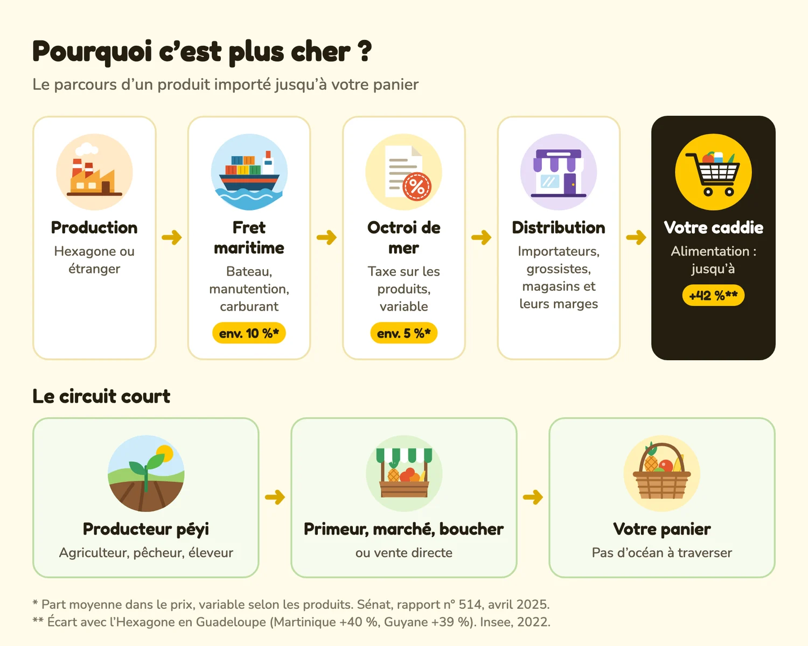
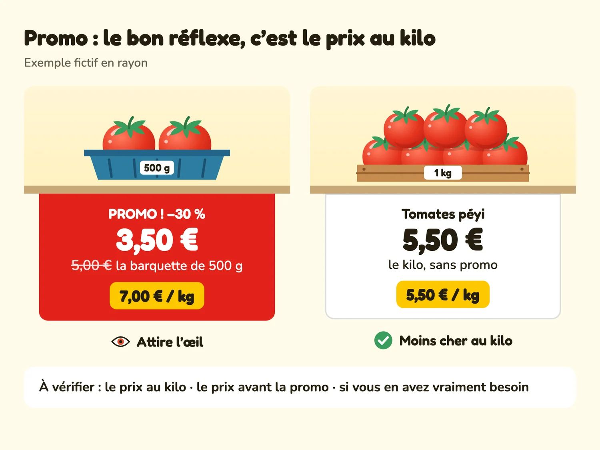

Remplir son frigo aux Antilles-Guyane, c'est souvent la mauvaise surprise au moment de passer en caisse. Ce n'est pas une impression : les chiffres le confirment. La bonne nouvelle, c'est qu'avec quelques réflexes, on peut vraiment alléger l'addition.
La vie chère en chiffres
Selon l'Insee, les produits alimentaires étaient en 2022 plus chers que dans l'Hexagone de :
- 42 % en Guadeloupe
- 40 % en Martinique
- 39 % en Guyane
Tous produits confondus, l'écart est de 16 % en Guadeloupe et de 14 % en Martinique et en Guyane. C'est donc bien dans l'assiette que la différence se sent le plus.
Pourquoi est-ce plus cher ici ?
Il n'y a pas un seul coupable. Un rapport du Sénat publié en avril 2025 cite plusieurs causes qui s'additionnent :
- L'éloignement. Beaucoup de produits traversent l'Atlantique. Avec la manutention et le carburant, le fret maritime pèse en moyenne 10 % du prix.
- L'octroi de mer. Cette taxe représenterait environ 5 % du prix final en moyenne, avec de gros écarts d'un produit à l'autre.
- De petits marchés. Moins d'habitants, donc moins de volumes et des coûts plus difficiles à répartir.
- Une faible concurrence et une forte dépendance aux importations.

Nos 7 réflexes pour payer moins cher
1. Consommer local
Un produit qui n'a pas traversé l'océan n'a pas payé le voyage. Le marché, le primeur, le boucher du quartier ou le poissonnier qui vend la pêche du jour : c'est frais, c'est bon, et l'argent reste sur le territoire. Prenez l'habitude de comparer, vous aurez souvent de bonnes surprises.
2. Suivre les saisons
Quand un fruit ou un légume est abondant, son prix baisse. Quand il se fait rare, il flambe. D'après ce calendrier martiniquais, novembre et décembre sont par exemple la saison des oranges, des mandarines, des chadèques et des prunes de Cythère. Le giraumon, l'igname, la christophine ou la patate douce se trouvent presque toute l'année.
3. Se méfier des produits rares : l'exemple de la tomate
La tomate est le meilleur exemple. Chez les primeurs et sur les marchés, nous l'avons vue grimper jusqu'à 7,90 € le kilo. Ce n'est pas un cas isolé : en août 2024, elle est montée jusqu'à 7 € le kilo en Martinique. Fin 2024 en Guadeloupe, elle se vendait entre 5 et 7 € en moyenne, avec des pics à 12 €, à cause d'un insecte qui a ravagé les cultures.
Le bon réflexe : surveiller les prix d'une semaine à l'autre, et remplacer le produit trop cher par un autre le temps que ça redescende. La salade de concombre ou de christophine fait très bien l'affaire.
4. Acheter directement chez les primeurs et les producteurs
Moins il y a d'intermédiaires, plus le prix peut être juste. Certains professionnels sont à la fois producteurs, grossistes et ouverts aux particuliers. C'est le cas de Soleil Fruits, à Dubédou (Saint-François, Guadeloupe), partenaire Gaspiz : ils produisent melons, pastèques et concombres, et vendent au détail dans leur boutique. Et sur chaque île, des producteurs vendent en direct, sur l'exploitation ou au marché.
5. Garder un œil critique sur les promos
Une promo n'est pas toujours une bonne affaire. C'est aussi un outil marketing, qui attire en magasin et pousse à acheter plus que prévu, et qui ne profite pas forcément aux producteurs locaux. Trois questions à se poser :
- Quel est le prix au kilo ou au litre ?
- Combien coûtait ce produit avant la promo ?
- Est-ce que j'en avais vraiment besoin ?
Dans l'exemple ci-dessous, le prix barré attire l'œil, mais le produit sans promo revient moins cher au kilo.

Deux paquets achetés dont un jeté, ce n'est plus une économie.
6. Ne plus rien jeter
Chaque aliment jeté, c'est de l'argent à la poubelle. Faites une liste, cuisinez d'abord ce qui s'abîme, congelez les restes. Pour les idées, l'appli Gaspiz propose une rubrique recettes : confiture d'ananas, gratin de fruit à pain, curry de giraumon...
7. Remplir son frigo avec une appli anti-gaspi
Chaque jour, des commerçants de qualité se retrouvent avec des invendus encore parfaitement bons. Avec Gaspiz, vous les récupérez en paniers surprise à petit prix, à partir de 5 € en moyenne.
Le principe est simple : vous réservez dans l'appli, vous payez directement le commerçant et vous repartez avec votre panier. On y trouve des boulangers-pâtissiers, des primeurs, des restaurateurs, des traiteurs... Deux exemples, aux prix relevés en novembre 2026 :
- Côté primeur : le panier de fruits et légumes en photo en haut de l'article, 10 € au lieu de 20 € chez Soleil Fruits, à Saint-François.
- Côté boulanger-pâtissier : le panier de la Boulangerie Nicolhas, à Sainte-Anne, bien achalandé, à 5 € au lieu de 10 € et noté 4,8/5 par les clients Gaspiz. Le contenu change selon les invendus du jour.
C'est aussi une façon de se faire plaisir et de découvrir de nouveaux commerçants près de chez soi, en Guadeloupe, en Martinique et en Guyane. Voir nos commerçants partenaires.
En résumé
On ne changera pas la distance avec l'Hexagone. Mais en achetant local et de saison, en comparant les prix et en sauvant des paniers, on reprend la main sur son budget, tout en soutenant ceux qui produisent et cuisinent ici.
Questions fréquentes
Pourquoi la vie est-elle plus chère aux Antilles et en Guyane ?
Plusieurs causes s'additionnent : l'éloignement et le coût du transport, l'octroi de mer, la petite taille des marchés, la faible concurrence et la dépendance aux importations.
De combien les produits alimentaires sont-ils plus chers ?
D'après l'Insee, en 2022, de 42 % en Guadeloupe, 40 % en Martinique et 39 % en Guyane par rapport à l'Hexagone.
Comment faire ses courses moins cher en Guadeloupe, Martinique ou Guyane ?
Achetez local et de saison, comparez les prix au kilo, allez directement chez les primeurs et les producteurs, et récupérez des paniers d'invendus avec une application anti-gaspi comme Gaspiz.
Combien coûte un panier anti-gaspi ?
Sur Gaspiz, les paniers sont proposés à partir de 5 € en moyenne, selon le commerçant et le contenu. Le paiement se fait sur place, directement auprès du commerçant.
Prêt à payer moins cher ?
Gaspiz est gratuite, sur iPhone et Android, en Guadeloupe, Martinique et Guyane.
Télécharger Gaspiz et réserver mon premier panierL'équipe Gaspiz